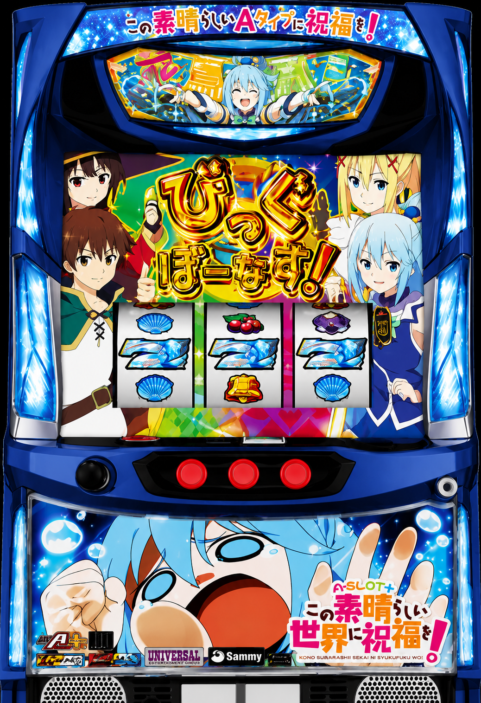

目次

A-SLOT+ この素晴らしい世界に祝福を！ A-SLOT+ このすば ｜ サミー（SAMMY）
BB獲得枚数
約250枚
RB獲得枚数
約50枚
設定6 機械割（通常）
107.6%
設定6 機械割（完全攻略）
110.4%
設定1 機械割（通常）
98.5%
設定1 機械割（完全攻略）
100.2%
A-SLOT+ このすば 設定別ボーナス確率・機械割
| 設定 | BB確率 | RB確率 | ボーナス合算 | 機械割（通常） | 機械割（完全攻略） |
|---|
※ 掲載数値は公開解析情報に基づきます。実際の数値と異なる場合があります。
遊技時間別・理論差枚数の目安
G/時間
| 設定 | 機械割 | 3時間 | 6時間 | 12時間 |
|---|---|---|---|---|
| 1 | 98.5% | |||
| 2 | 99.3% | |||
| 3 | 101.2% | |||
| 4 | 102.9% | |||
| 5 | 105.1% | |||
| 6 | 107.6% |
読み方のポイント：設定3以上で機械割100%超。設定1・2はわずかにマイナスですが、完全攻略（ビタ押し成功）で設定1でも100.2%に改善されます。
※ 本表はあくまで理論上の参考値です。実際の差枚数は確率の波により大きく上下します。
※ 遊技の判断はご自身の責任でお願いします。当サイトは一切の責任を負いかねます。
※ 遊技の判断はご自身の責任でお願いします。当サイトは一切の責任を負いかねます。
交換レートを選択
枚交換
交換額（pt）の目安
交換レート：等価（50枚 / 1,000pt）
| 設定 | 機械割 | 3時間 | 6時間 | 12時間 |
|---|---|---|---|---|
| 1 | ||||
| 2 | ||||
| 3 | ||||
| 4 | ||||
| 5 | ||||
| 6 |
5スロ（コイン単価5pt）での交換額目安です。上記で選択した交換レートと同じ比率で計算しています。
| 設定 | 機械割 | 3時間 | 6時間 | 12時間 |
|---|---|---|---|---|
| 1 | ||||
| 2 | ||||
| 3 | ||||
| 4 | ||||
| 5 | ||||
| 6 |
A-SLOT+ このすば 小役確率
| 設定 | 共通ベル | スイカ |
|---|
共通ベルの使い方：設定1（1/17.2）〜設定6（1/15.4）で全設定に差があります。1,000G以上のサンプルで傾向を掴み、1/16.0以下なら設定4以上を意識してください。
その他の小役確率
| 小役 | 設定1 | 設定2 | 設定3 | 設定4 | 設定5 | 設定6 |
|---|---|---|---|---|---|---|
| チェリー | 1/79.9 | 1/78.0 | 1/77.3 | 1/76.3 | 1/74.9 | 1/73.3 |
| チャンス目 | 1/49.9 | 1/49.8 | 1/49.1 | 1/48.5 | 1/47.5 | 1/46.9 |
A-SLOT+ このすば 設定判別ポイント
- ① REG確率（最重要） 設定間でREG確率の差が大きく、最優先の判別指標。設定1（1/399.6）→設定6（1/312.1）まで段階的に上昇。3,000G以上のサンプルで1/330以下なら高設定を疑う。
- ② 共通ベル確率 リアルタイムで数えやすい指標。設定1（1/17.2）〜設定6（1/15.4）。短期サンプルでも傾向が出やすく、1,000G程度から参考にできる。
- ③ BB中ビタ押しカットイン スタンプ BB中の祝福カットインにスタンプが出現すれば高設定のチャンス。金スタンプなら設定2以上濃厚、虹スタンプなら設定6濃厚。
- ④ ボーナス比率（BB:REG） 高設定ほどREGの比率が高くなる。設定6でBB:REGが約1:1.3。REGが多い展開は高設定のサイン。
設定推測の目安（3,000G時）
| 指標 | 設定1目安 | 設定3〜4目安 | 設定6目安 |
|---|---|---|---|
| REG確率 | 〜1/370 | 1/340〜1/380 | 1/290〜 |
| 共通ベル | 〜1/16.8 | 1/16.1〜1/16.8 | 1/15.2〜 |
打ち方
通常時
1
左リール：チェリー狙い
左リールにチェリーを狙う。こぼすとチェリー確率のカウントに影響するため毎ゲーム狙うのがおすすめ。
2
中・右リール：フリー打ち
チェリー以外のフラグはフリーで揃う。ボーナス告知後はリールを止めて入賞させる。
BB中（ビタ押し）
技術介入要素：BB中は特定タイミングでのビタ押しに成功すると1枚役を獲得でき、機械割が向上します（通常98.5%→完全攻略100.2%）。ビタ押し成功時に祝福カットインが発生し、スタンプ出現で設定示唆となります。
RB中
RB中：ナビに従い1枚役を狙う。技術介入で獲得枚数を最大化できます。
ボーナス概要
🎰 BIG BONUS（BB）
- 獲得枚数
- 最大 約250枚
- 確率（設定1）
- 1/266.4
- 確率（設定6）
- 1/238.3
- 内容
- ビタ押しで1枚役獲得チャンス／設定示唆カットイン発生
🔔 REG BONUS（RB）
- 獲得枚数
- 最大 約50枚
- 確率（設定1）
- 1/399.6
- 確率（設定6）
- 1/312.1
- 設定判別
- RB確率が最重要判別指標
📊 ボーナス合算
- 設定1 合算
- 1/159.8
- 設定6 合算
- 1/135.1
- BB:RB 比率（設定6）
- 約1:1.31
- 備考
- RB比率が高いほど高設定
A-SLOT+ このすば 設定推定ツール
消化G数・ボーナス回数・小役回数を入力すると、各設定の推定確率をバーグラフで表示します。
A-SLOT+ このすば よくある質問（FAQ）
A-SLOT+ このすばの設定6のボーナス確率は？
設定6はBB確率1/238.3、REG確率1/312.1です。合算確率は1/135.1で、機械割（通常）は107.6%、完全攻略時110.4%です。
A-SLOT+ このすばの設定判別で重要な指標は？
REG確率と共通ベル確率が主要な設定判別指標です。REG確率の設定差が大きく、BIG中のビタ押しカットインのスタンプ（金・虹）も設定示唆として重要です。
A-SLOT+ このすばの機械割は？
設定1が98.5%（完全攻略100.2%）、設定3が101.2%（完全攻略103.2%）、設定6が107.6%（完全攻略110.4%）です。
このすばタイムとは？
BB当選後に突入するメインAT機能で、1セット30G継続のセット管理型ATです。純増は現状維持程度で、ボーナスを引き続けることで出玉を増やすゲーム性です。演出モードは「スーパーこのすばワールド」「ヒロインたいむ」「通常モード」の3種類から選択でき、AT開始時に長押しで裏モード「パトアクアモード」も選択可能です。
このすばタイムの振り分けは？
BB当選後は必ずこのすばタイムに突入し、初回は2〜10個のストック（1ストック＝30G）を獲得します。RB当選後は一部でこのすばタイムへ突入し、KT中のRBでは必ず1個以上ストックされます。ストック数の詳細な振り分けは非公開ですが、高設定ほどストック獲得が優遇される設計です。
A-SLOT+ このすば 公式動画
▶ プロモーションムービー
▶ 最速解説動画
※ サミー株式会社 公式YouTubeチャンネルより